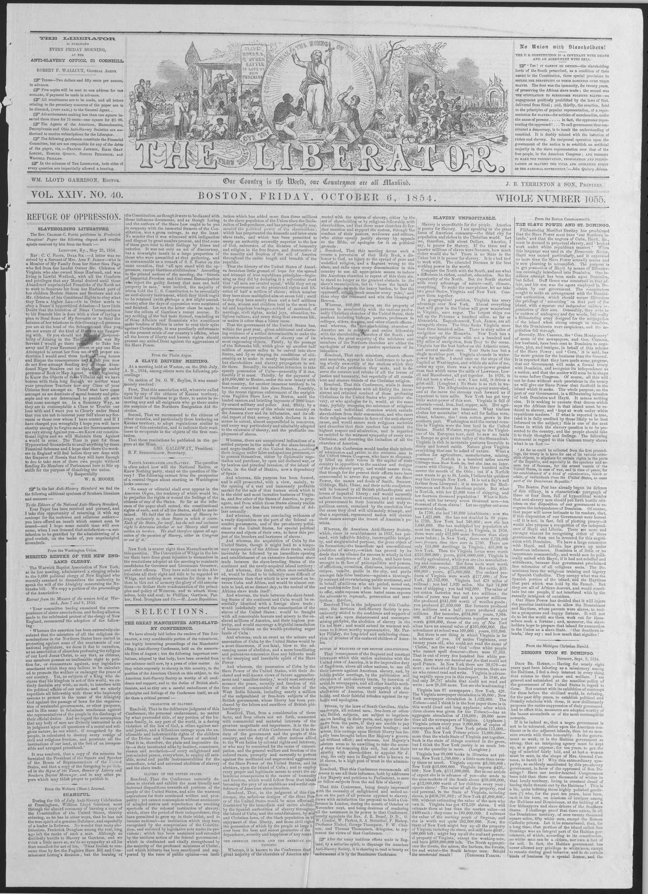

From the Boston Commonwealth.Del Boston Commonwealth.
The Liberator. Boston, Mass., October 6, 1854. Page 1. Published by William Lloyd Garrison and Isaac Knapp. A weekly newspaper, 1831–1865.The Liberator. Boston, Mass., 6 de octubre de 1854. Página 1. Publicado por William Lloyd Garrison and Isaac Knapp. Periódico semanal, 1831–1865. View the originalVer el original

The Liberator reported that the Boston Post defended the United States government's disposition to recognize the independence of Dominica while ignoring the absence of any proposed recognition for Hayti and Liberia, despite stronger commercial and historical reasons to do so. The article argued that Dominica is of little commercial importance and would be politically united with Hayti—from which it rebelled due to religious differences—were it not for outside intrigues. Furthermore, the newspaper claimed that the American "Slave Power" has decided that the prosperity of Dominicans and Haytiens of African descent would injure its "peculiar institution."The Liberator refirió que el Boston Post justificó la inclinación del gobierno de Washington a reconocer la independencia dominicana al tiempo que ignoraba la falta de reconocimiento hacia Haití y Liberia, no obstante mediar motivos históricos y comerciales de mayor peso para hacerlo. La columna aducía que Santo Domingo poseía escaso relieve mercantil y permanecería unido políticamente a Haití —de donde se desgajó por disidencias religiosas— de no mediar intrigas foráneas. Aseveraba además el periódico que el «Poder Esclavista» norteamericano determinó que el florecimiento de dominicanos y haitianos de ascendencia africana perjudicaría a su «peculiar institución».
FULL TEXT:TEXTO COMPLETO:
From the Boston Commonwealth.Del Boston Commonwealth.
THE SLAVE POWER AND ST. DOMINGO.EL PODER ESCLAVISTA Y SANTO DOMINGO.
Filibustering Manifest Destiny has proclaimed that the Slave Power must have ‘our Southern islands,’ and that the negroes of Cuba, Hayti, &c., must be doomed to perpetual slavery, and ‘kept at work under white republican masters.’ When this language was used in the Democratic Review, Hayti was named particularly, and it expressed no more than the Slave Power actually means and is now planning to accomplish. The purpose is to get possession of Hayti by means of filibusterism cunningly introduced into Dominica. One insidious attempt has been made upon Dominica, but failed. Duff Green was concerned in that affair, and his son was the agent employed in Dominica by our government. The conspirators sought to make an arrangement with the Dominican authorities, which should secure filibusters the privilege of ‘colonizing’ on that part of the island, with a separate and independent military organization of their own. Ostensibly, they were to be cutters of mahogony and dye woods, but really a filibustering army designed for the subjugation of the island when strong enough in numbers. But the Dominicans were suspicious, and the negotiation fell through.El Destino Manifiesto Filibustero ha proclamado que el Poder Esclavista debe tener «nuestras islas del Sur», y que los negros de Cuba, Haití, etc., deben ser condenados a la esclavitud perpetua, y «mantenidos trabajando bajo amos republicanos blancos». Cuando este lenguaje fue usado en la Democratic Review, Haití fue nombrado particularmente, y no expresó más de lo que el Poder Esclavista realmente quiere decir y ahora está planeando lograr. El propósito es obtener posesión de Haití por medio del filibusterismo astutamente introducido en Dominica. Un intento insidioso ha sido hecho sobre Dominica, pero fracasó. Duff Green estuvo implicado en ese asunto, y su hijo fue el agente empleado en Dominica por nuestro gobierno. Los conspiradores buscaron hacer un arreglo con las autoridades dominicanas, que asegurara a los filibusteros el privilegio de «colonizar» en esa parte de la isla, con una organización militar separada e independiente propia. Ostensiblemente, habían de ser cortadores de caoba y palos de tinte, pero realmente un ejército filibustero diseñado para la subyugación de la isla cuando fuera suficientemente fuerte en números. Pero los dominicanos fueron sospechosos, y la negociación se vino abajo.
Recently, Mrs. Cazneau, the ‘Cora Montgomery’ of some of the newspapers, and Gen. Cazneau, her husband, have been sent to Dominica to negotiate, plot, and intrigue, in behalf of this scheme of the Slave Power; and ‘Cora,’ it is said, has far more genius for the business than the General. It is reported that they have made some progress, that our Government will make a formal treaty with Dominica, and recognize its independence as a nation, and that the matter will soon be in shape to come before Congress. Of course, all this will not be done without such provisions in the treaty as will give our Slave Power that foothold in the island which it seeks. The whole purpose, on the part of our Government, is a filibustering invasion of both Dominica and Hayti. It means nothing else. It is seeking to execute that decree which says the African race in that island must be reduced to slavery, and ‘kept at work under white republican masters.’ If what is reported is true, (and it is fully credited by those likely to be best informed on the subject,) this is one of the next forms in which the slavery question is to be presented to the country, and the people should take it to their thoughts and feelings. The following statement in regard to this Cazneau treaty shows what is on foot:—Recientemente, la Sra. Cazneau, la «Cora Montgomery» de algunos de los periódicos, y el General Cazneau, su esposo, han sido enviados a Dominica a negociar, tramar e intrigar, en favor de este esquema del Poder Esclavista; y «Cora», se dice, tiene mucho más genio para el negocio que el General. Se informa que han hecho algún progreso, que nuestro Gobierno hará un tratado formal con Dominica, y reconocerá su independencia como nación, y que el asunto pronto estará en forma de venir ante el Congreso. Por supuesto, todo esto no se hará sin tales disposiciones en el tratado que den a nuestro Poder Esclavista ese punto de apoyo en la isla que busca. Todo el propósito, por parte de nuestro Gobierno, es una invasión filibustera de tanto Dominica como Haití. No significa otra cosa. Está buscando ejecutar ese decreto que dice que la raza africana en esa isla debe ser reducida a la esclavitud, y «mantenida trabajando bajo amos republicanos blancos». Si lo que se informa es cierto, (y es plenamente creído por aquellos probablemente mejor informados sobre el tema,) esta es una de las próximas formas en que la cuestión de la esclavitud ha de presentarse al país, y el pueblo debería llevarlo a sus pensamientos y sentimientos. La siguiente declaración respecto a este tratado Cazneau muestra lo que está en marcha:—
‘As far as could be collected from the first proceedings, the treaty is to have for one of its various ostensible objects, to stipulate for certain rights in the ports of the Republic, and especially in the spacious and secure bay of Samana, for the armed vessels of the United States, in case of war, and in time of peace, for the establishment of a kind of colonization, black or white, of individuals from the United States, in some part of the Dominican Republic.’«En la medida en que pudo recogerse de los primeros procedimientos, el tratado ha de tener por uno de sus varios objetos ostensibles, estipular ciertos derechos en los puertos de la República, y especialmente en la bahía espaciosa y segura de Samaná, para los buques armados de los Estados Unidos, en caso de guerra, y en tiempo de paz, para el establecimiento de una especie de colonización, negra o blanca, de individuos de los Estados Unidos, en alguna parte de la República Dominicana».
The Boston Post has already begun its defence of this villany, in a characteristic parrgraph of three or four lines, full of hypocritical wonder that anti-slavery men should put forth hostile criticism on the disposition of our government to recognize the independence of Dominica. Of course, that paper will never intimate to its readers, that, if this disposition of our Government were honest—if it is not, in fact, full of plotting piracy—it would also propose a recognition of the independence of Hayti and Liberia. There are more and stronger reasons for recognizing either of these gevernments than can be invented for this negotiation with Dominica. We have a large commerce with Hayti, and Liberia has grown up under American influences. Dominica is of little or no importance commercially, and would now be politically united with Hayti, if it had not rebelled and withdrawn, because that government proclaimed free toleration of all religious sects. The Dominicans have the religious training and bigotry of Spanish Catholics. They occupy what was the Spanish portion of the island, and the Haytiens that part which was held by the French. But they are all of African descent, and would constitute but one people, if not interfered with by the rascally intrigues of outsiders.El Boston Post ya ha comenzado su defensa de esta villanía, en un párrafo característico de tres o cuatro líneas, lleno de maravilla hipócrita de que los hombres antiesclavistas deban lanzar crítica hostil sobre la disposición de nuestro gobierno de reconocer la independencia de Dominica. Por supuesto, ese periódico nunca intimará a sus lectores, que, si esta disposición de nuestro Gobierno fuera honesta —si no está, en efecto, llena de piratería tramada— también propondría un reconocimiento de la independencia de Haití y Liberia. Hay más y más fuertes razones para reconocer cualquiera de estos gobiernos que pueden inventarse para esta negociación con Dominica. Tenemos un gran comercio con Haití, y Liberia ha crecido bajo influencias estadounidenses. Dominica es de poca o ninguna importancia comercialmente, y ahora estaría políticamente unida con Haití, si no se hubiera rebelado y retirado, porque ese gobierno proclamó la libre tolerancia de todas las sectas religiosas. Los dominicanos tienen la formación religiosa y la intolerancia de los católicos españoles. Ocupan lo que fue la porción española de la isla, y los haitianos aquella parte que fue sostenida por los franceses. Pero todos son de descendencia africana, y constituirían un solo pueblo, si no fueran interferidos por las intrigas rascales de los de afuera.
Our Slave Power has decided that it will injure the peculiar institution to allow the Dominicans and Haytiens, whose parents were slaves, to realize a prosperous and happy fortune. It will not do to let the world see them work out for themselves such a fortune; and, moreover, the slaveholders hope to prepare that island for annexation to the Union as a slave State. ‘Our Southern islands,’ they say; and how much that signifies!Nuestro Poder Esclavista ha decidido que injuriará a la institución peculiar permitir a los dominicanos y haitianos, cuyos padres fueron esclavos, realizar una fortuna próspera y feliz. No servirá dejar que el mundo los vea trabajar por sí mismos tal fortuna; y, además, los esclavistas esperan preparar esa isla para la anexión a la Unión como un Estado esclavista. «Nuestras islas del Sur», dicen; ¡y cuánto significa eso!
In this article, the newspaper calls the country 'Dominica.' It means the Dominican Republic, not the island of Dominica.En este artículo, el periódico llama al país «Dominica». Se refiere a la República Dominicana, no a la isla de Dominica.
This collection gathers the coverage of the Dominican Republic in the American press, in the order it was published.Esta colección reúne la cobertura de la República Dominicana en la prensa estadounidense, en el orden en que se publicaron.